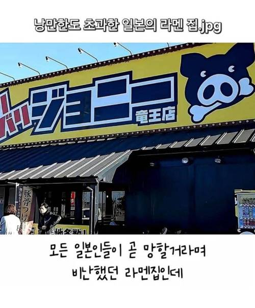
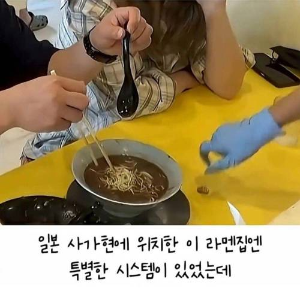
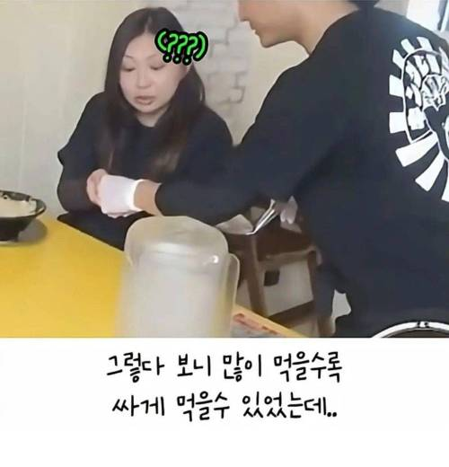
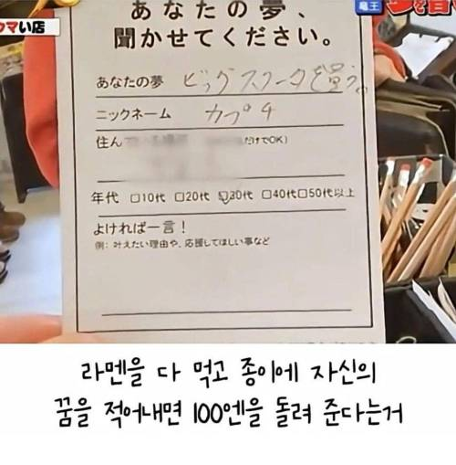
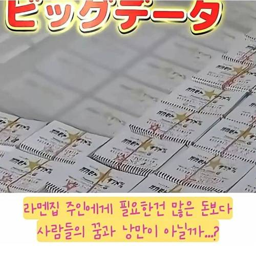
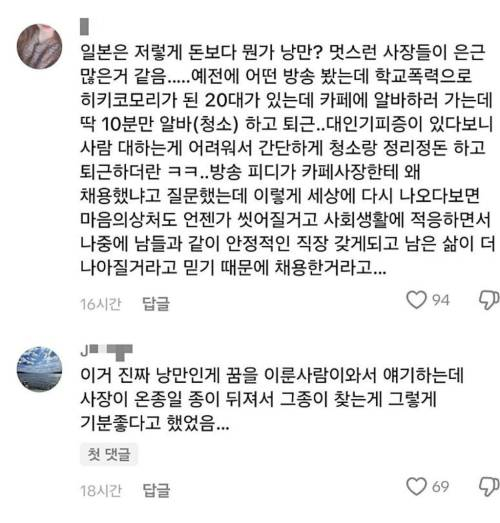

얌마
영업이 끝나고 본다잖아 ㅋㅋㅋㅋㅋ
영업하는 쟤가 만들겠지 ㅋㅋㅋ
너도 한때는 낭만이란게 있었겠지...
회사에서 코고는것도 낭만이겠지
아이 첫댓꼬라지! ㅋㅋㅋㅋ
성공적
1000엔 라면 기준으로 면추가 100번하면 공짜인거야?
그정도면 세숫대야 돈까스 먹기 챌린지 같은느낌 아닐까
수학좀 치네 니말듣고 저기가서 면추가 만번해서 10만엔 벌고옴
부럽다야 나 100엔만
그러면 이제 표독한 한국 사장#1 만들어지는거야
면 100번 추가해서 먹을정도면
관람비로 1000엔 내가 대신 내줄 수도 있다 ㅋㅋ
쯔앙이 가면 돈 받고 먹을 수 있는거임??
가게 인수함 ㅋㅋㅋㅋ
낭만이 있다는건 참 좋아
멋있는 사람이구만
낭만과 음침이 공존하는 나라라는게 참 신기함
너도 낭만과 음침이 공존하잖아
개인 한 명도 입체적인데 국가를 어떻게 하나로 규정하겠어
음침거유씹덕아싸모쏠녀에겐 낭만과 음침이 공존한다
신기한게 참 많구나
나라는 개인이 아니다
멋지긴하다 이런 생각은 처음보네 ㅋㅋ
면추가는 카에다마 라고 한다는 걸 알아두고가면 좋아
카미나리노코큐 ㄷㄷㄷ
오 되게 좋다
확실히 일본이 아시아에서 낭만이 남은 유일한 국가긴함
특히 운동하는애들 감사의 정권지르기마냥 몇만번챌린지하는거 혹사니 뭐니해도 하는거보면 응원하게됨
유일할리가 있나 아무리 쨍캐짱캐 거리는 중국에도 의협 넘치는 따거 대협들 심심하면 나오고
한국에도 인류애 채우는 소식 간간히 나오는데 ㅋㅋ
그게 보편적 정서가 아니잖아
쉽게말해서 낭만=비효율인데 중국은 우리나라보다 극한의 효율을 추구하는 민족임
이색기 이거 인도 안 가봤네 ㅋㅋ 야 겐지스강에서 매일 같이 병균 샤워 하는 언럭키 기안 행님들 안 보이냐? ㅋㅋㅋㅋㅋㅋ 낭만이 없으면 그게 가능할 것 같음?
알고하는거랑 모르고하는거라우똑같음?
그럼 저 사장은 자기가 하는 행동의 본질을 다 알고 한다고 생각함? 네가 뭔데 그걸 판단함? 네가 뭔데 '아시아에서 유일하다'는 판정을 내림? ㅋㅋㅋㅋ
좋은 글에서 개쌉소리 처하는 거 보면 낭만이 뒈져버렸구나
이새끼 존나 이분법 적인 사상이네
니 옆집 윗집에도 낭만은 있다 시발 ㅋㅋㅋㅋ
그렇게 효율을 추구하지만 또 꽌시라는 문화가 있는거보면 꼭 그렇지만도 않음
중국이 워낙 큰 나라고 사람이 많으니 일반화하기 어렵다
낭만
노스텔지어
헤리티지
클래식
빈티지
를 즐길줄 아는 나라.
왜냐하면 수백년동안
크게 망가진 적이 없거든요.
우리나라든 중국이든 찾으면 낭만 넘치는 사례는 많음
오히려 사소한 것도 쉽게 접하다보니 자극적인 것만 보게 되는거지
유일같은 소리는 함부로 하는 게 아니다
그야 일본이 자기 이외의 아시아 국가의 낭만과 전통들을 다 박살냈는걸

낭-만
우리동네 라맨집도 조금 짠거 같아서, 앙케이트에 적어내니까 다음달에 별로 안 짠 옵션 생겼더라
본토가 전반적으로 크게 박살난 적이 없어서 낭만이 살아 있는 건가
나도 나중에 저기 댓글 카페 사장 처럼 힘든 애들 도와주는 사람 되고싶다..
종이 찾기에서 가슴이 울린다
멋있다
아이디어 좋다

일본은 저런 서사 만드는거를 나라단위로 조성해둬서 하기 좋은 분위기인데
울나라였으면 유난떤다고 바로 개지랄하는 새끼들 나왔음 ㅋㅋ
온종일 종이 뒤지고 있으면 라멘은 누가 만드냐